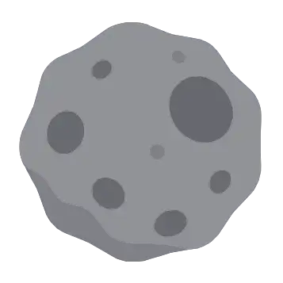
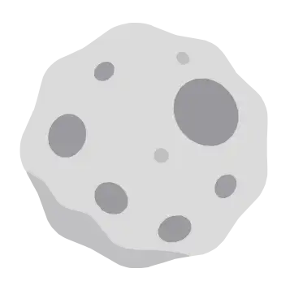
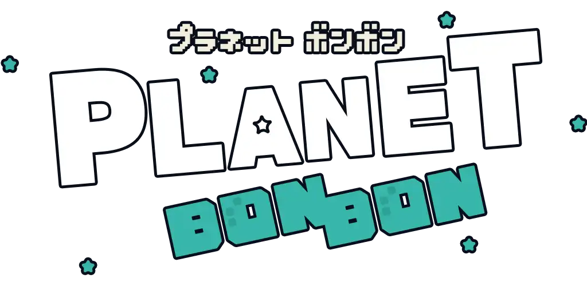

0s
--:--
SCORE
0
FAST
SLOW
⚡
- PAUSE -
やめる

つづける
オプション
OPTION
お気に入りスキル
選択すると、スキル選択画面の抽選に必ず1つ含まれるようになります。
プレイヤーの移動操作方法
タッチ位置操作：タッチした位置の方向に機体が動きます。
タッチ追従スティック：タッチした場所にスティックが表示されます。
タッチ追従スティックのみ：（モバイル限定）仮想スティック非表示。
タッチ位置
タッチ追従
スティック
タッチ追従
スティックのみ
BGM
ON
OFF
効果音
ON
OFF
セーブデータ
セーブデータを初期化
もどる
セーブデータを初期化しますか？
レベル・経験値・称号・自己ベスト・統計・設定がすべて消去されます。この操作は取り消せません。
キャンセル
初期化する
新しいスキルを獲得！
OK



PLAY
アチーブメント
遊び方
×
とじる
LEVEL UP！ Lv.2
FINISH
スコア
NEW!
0
最大連鎖
0
プレイ時間
0:00
取得アイテム
自己ベスト TOP3
1
-
2
-
3
-
EXP
×2
↺ リトライ
← もどる
Lv
1
EXP
レベルアップまで あと
100

- 実績ログ -
まだ実績の記録はありません
EPが足りません
タップして閉じる
タップして閉じる
いいえ
はい
獲得！
タップして閉じる
×
AD（広告プレースホルダー）
5
これは広告SDK接続前の仮の視聴画面です。
最後まで表示すると報酬を受け取れます。
- アイコンを選択 -
閉じる
- チュートリアル -
- 実績 -
記録
実績一覧
レベル
Lv.1
EXP
0/100
自己ベストランキング
1
-
2
-
3
-
プレイ時間
0分
実績達成率
0%
スキル解放レベル
SELECT SKILL
スキルを1つ選んでゲームを開始
START GAME
飛ばす方向を決めよう
発射！
OK
ギミック作動
〜 を そのまま丸ごと削除する（完全に取り除きたいとき） ══════════════════════════════════════════════════════════════════ -->
🛠
⚠ DEBUG TOOLS ⚠
レベル +5
レベル +10
パフォーマンス表示 ON/OFF